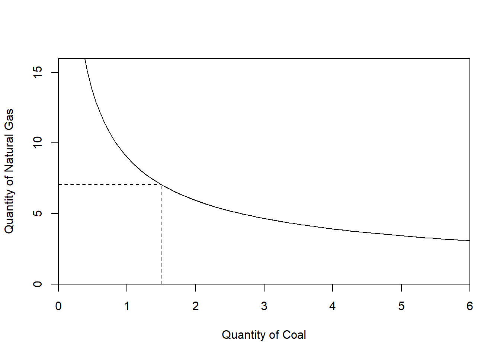
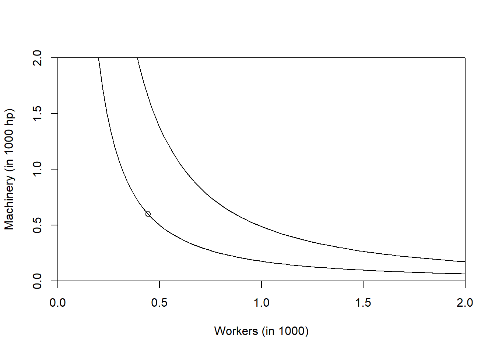

4.5 Exercises
A farmer uses nitrogen (\(N\)) as an input to produce corn yield as the output. The production function which relates nitrogen inputs to corn yield is written as \(y=f(N)\). With the current management practices, the farmer obtains \(y^\star\) bushels of corn with \(N^\star = 120\) pounds of nitrogen fertilizer. Given that setup, we have \(y^\star < f(120)\). Are the inputs used efficiently? Use a graph to justify your answer.
The “Malthusian Catastrophe” was the prediction by the English cleric and scholar Thomas Malthus (1766-1834) that population will grow faster than agricultural production. Use the concept of diminishing returns to labor in the short-run to explain his reasoning. Explain why it did not happen. Use a graph to justify your answer.
The production function of a firm is written as \(f(x) = 8 \sqrt{x}\) where \(x\) are the units of input. The per-unit output price is $100 and the per-unit input cost is $75. Write down the profit only as a function of \(x\).
Assume an electricity producer that currently uses a mix of natural gas and coal as inputs to produce electricity as depicted in the figure below. In the short-run, the electricity producer can adjust neither coal nor natural gas as the input for electricity production, i.e., both inputs are fixed. The initial input mix of coal and natural gas is depicted in the figure belwoas well as the current isoquant. The output does not change throughout the exercise.
- Reproduce the figure and sketch an isocost for the quantity of electricity produced.
- Assume that in the short-run, the price of coal decreases relative to natural gas. What happens to the isocost line? Is the choice of inputs optimal after the price change? Justify your answer.
- In the long-run, what will happen to the combination of coal and natural gas used in the production of electricity if the price of coal remains low. Illustrate in your graph.

Figure 4.6: Electricity production with natural gas and coal.
Suppose you are running a copper mine. You can either use machinery or workers to extract the copper. Currently, you are using a 600 horse power train to get the copper out of the mine. You have signed a leasing agreement for that train which you cannot change in the short-run. In the figure below, you will see two isoquant curves and a point indicating the initial (optimal) combination of workers and the train. The input prices remain unchanged throughout the question. Sketch the corresponding isocost line through the initial, optimal point. Assume that the machinery is fixed at 600 horse power and cannot be changed in the short-run. Due to changed demand, you need to expand production to the higher isoquant line. Show the new isocost line? Is it optimal? If yes, why? If no, why not? You are now able to adjust workers and machinery in the long-run while staying on the higher isoquant curve. What is the effect on cost? What is the effect on the optimal input combination. Support your answer in the graph.
